Los beneficios de utilizar LEGO Mindstorms (al igual que LEGO Wedo) en la educación son muchos y variados.
La utilización de los productos de robótica educativa de LEGO en la edad escolar ayuda a fomentar numerosas
habilidades. Estas son algunas de las ventajas de "jugar" con este tipo de material.
- Desarrolla la creatividad tanto en el juego individual como en el colectivo.
- Capacidad para resolver problemas: hay que buscar una solución sí o sí. Se puede aplicar en las
asignaturas científico-técnicas.
- Ayuda a desarrollar el pensamiento lógico: cuando los jóvenes se enfrentan a ciertos retos necesitan
estructurar y organizar sus ideas y por tanto, utilizan la lógica.
Pero más allá de estas ventajas, la utilización de esta herramienta fomenta tres objetivos fundamentales que
son:
- La comunicación: fomentando el desarrollo del lenguaje y la creatividad.
- Las habilidades lógicas: desarrollando su psicomotricidad a través de la construcción, logrando una
mayor habilidad con el paso del tiempo para resolver problemas.
- Las TICS: iniciando a los más jóvenes a utilizar la robótica como diversión y herramienta para
aprender y solucionar problemas.
Consideramos que ya en esta fase y con los juegos robotizados, los niños son capaces de adquirir habilidades
básicas de programación, colaboración y presentación. Los jóvenes, gracias a estos juegos didácticos
desarrollan un pensamiento más crítico.
LEGO Mindstorms es considerado como una línea de robótica educativa de amplio espectro para jóvenes, que
proporcionará acceso a retos, máquinas complejas, competiciones y entornos completos de programación y
mecánica.
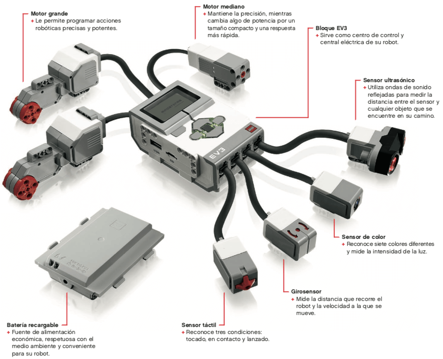
La pantalla muestra lo que sucede en el interior del Bloque EV3 y permite utilizar la interfaz del Bloque.
También permite agregar texto y respuestas numéricas o gráficas a la programación o a los experimentos. Por
ejemplo, tal vez sea conveniente programar la pantalla para mostrar una cara feliz (o una cara triste) de una
respuesta comparada o para mostrar un número que sea el resultado de un cálculo matemático.
Los botones del Bloque EV3 permiten explorar el interior de la Interfaz del bloque. También pueden
utilizarse como activadores de programación. Por ejemplo, puede programar un robot para elevar los brazos si
se presiona el botón Arriba o para bajarlos si se presiona el botón Abajo.
La luz de estado del Bloque EV3 indica el estado actual del Bloque EV3. Puede ser verde, naranja o roja y
puede parpadear.
Los códigos de la luz de estado del Bloque EV3 son los siguientes:
- Rojo: inicio, actualizando, apagado.
- Rojo con parpadeo: ocupado.
- Naranja: alerta, listo.
- Naranja con parpadeo: alerta, ejecutando.
- Verde: listo.
- Verde con parpadeo: ejecutando programa.
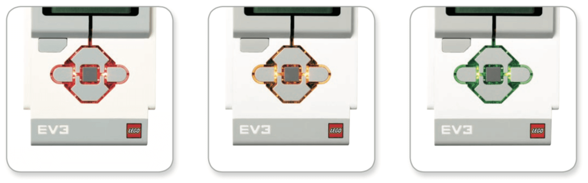
También puede programar la luz de estado del bloque EV3 para que muestre diferentes colores y para que
parpadee al darse diferentes condiciones.
El bloque EV3 tiene diferentes puertos de entrada y salida donde conectaremos los distintos sensores y
actuadores, así como el Pc y otros elementos. Las conexiones que tiene el bloque EV3 son:
- Puertos de entrada: los puertos de entrada 1, 2, 3 y 4 se utilizan para conectar los sensores al
bloque EV3.
- Puertos de salida: los puertos de salida A, B, C y D se utilizan para conectar los motores
(actuadores) al bloque EV3.
- Puerto para PC: el puerto mini USB para PC que se encuentra junto al puerto D, se utiliza para
conectar el bloque EV3 a un equipo.
- Puerto anfitrión USB: este puerto puede utilizarse para insertar un conector Wifi para poder
conectarse a una red inalámbrica o para establecer una conexión de hasta cuatro bloques EV3 juntos.
- Puerto para tarjeta Micro SD: Insertando una tarjeta Micro SD en este puerto, aumentaremos la
memoria disponible de nuestro bloque EV3 hasta 32 GB más.
- Altavoz: Todos los sonidos del bloque EV3 salen a través de este altavoz, incluidos todos los
efectos de sonido utilizados en la programación del robot.
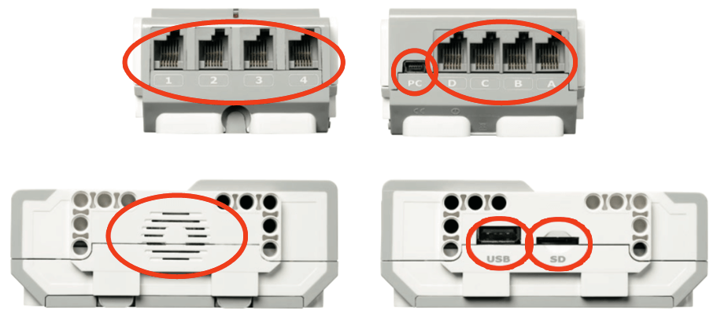
El motor grande es un motor "inteligente" potente. Tiene un sensor de rotación incorporado con resolución de 1 grado para un control preciso. El motor grande se ha optimizado para ser la base motriz de sus robots.
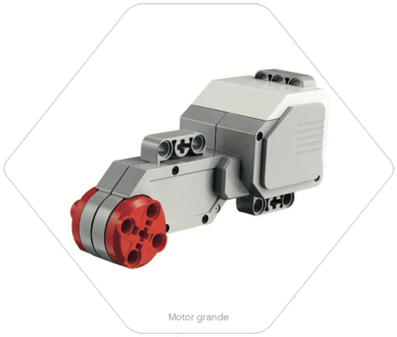
Al utilizar el bloque de programación Mover la dirección o Mover tanque, los motores grandes coordinarán la
acción simultáneamente.
El motor grande funciona a 160–170 rpm, con un torque de rotación de 20 Ncm y un torque de rotor bloqueado
de 40 Ncm (más lento, pero más potente) y admite identificación automática.
El motor mediano también incluye un sensor de rotación incorporado (con resolución de 1 grado), pero es más pequeño y más liviano que el motor grande. Esto significa que puede responder más rápidamente que el motor grande.
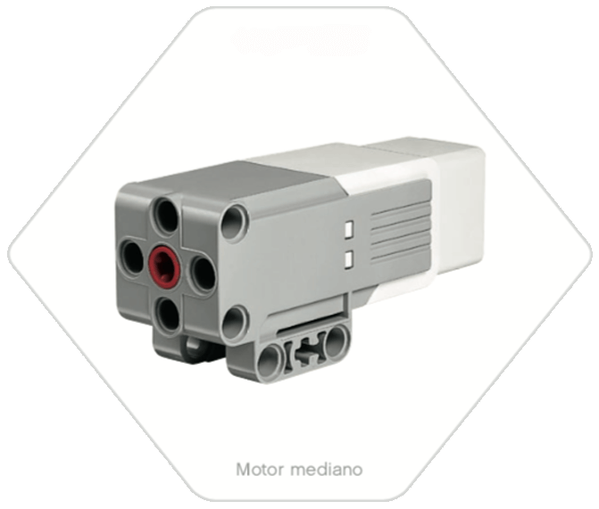
El motor mediano puede programarse para encenderse o apagarse, controlar su nivel de energía o para funcionar
durante una cantidad de tiempo o de rotaciones especificada.
El motor mediano funciona a 240–250 rpm, con un torque de rotación de 8 Ncm y un torque de rotor bloqueado
de 12 Ncm (más rápido, pero menos potente) y admite identificación automática.
El sensor de color es un sensor digital que puede detectar el color o la intensidad de la luz que ingresa por la pequeña ventana de la cara del sensor.
Este sensor puede utilizarse en tres modos diferentes: modo color, modo intensidad de la luz reflejada y
modo intensidad de la luz ambiental.
- En modo color, el sensor reconoce siete colores: negro, azul, verde, amarillo, rojo, blanco y
marrón, además de sin color. Esta capacidad de diferenciar los colores significa que su robot puede
estar programado para clasificar pelotas o bloques de colores, decir los nombres de los colores a
medida que los detecta o para detenerse cuando detecta el color rojo.
- En modo intensidad de la luz reflejada, el sensor mide la intensidad de la luz que se refleja desde una lámpara emisora de luz color rojo. El sensor utiliza una escala de 0 (muy oscuro) a 100 (muy luminoso). Esto significa que su robot puede estar programado para moverse sobre una superficie blanca hasta detectar una línea negra o para interpretar una tarjeta de identificación con código de color.
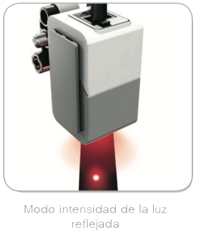
- En modo intensidad de la luz ambiental, el sensor mide la intensidad de la luz que ingresa en la ventana desde su entorno, como la luz del sol o el haz de una linterna. El sensor utiliza una escala de 0 (muy oscuro) a 100 (muy luminoso). Esto significa que su robot puede estar programado para emitir una alarma al salir el sol por la mañana o para detenerse si las luces se apagan.
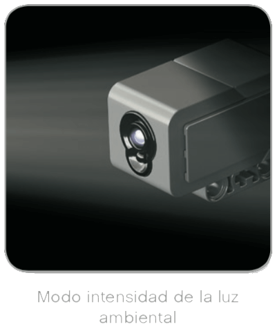
La tasa de muestreo del sensor de color es de 1 kHz. Para optimizar la exactitud, en modo color o en modo intensidad de la luz reflejada, el sensor debe sostenerse en un ángulo recto, cerca de la superficie que examina, pero sin tocarla.
El girosensor es un sensor digital que detecta el movimiento de rotación en un eje simple.
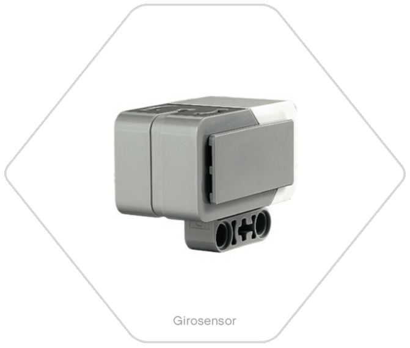
Si rota el girosensor en la dirección que indican las flechas que se encuentran en la caja del sensor, este puede detectar la razón de rotación en grados por segundo (puede medir una razón de giro máxima de 440 grados por segundo).
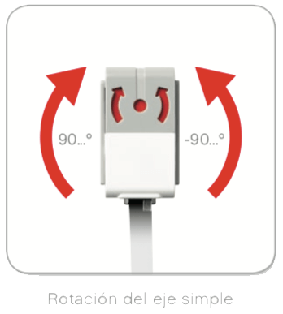
Se puede utilizar la razón de rotación para detectar, por ejemplo, si gira una parte del robot o si el robot
se cae.
Además, el girosensor registra el ángulo de rotación total en grados. Puede utilizar este ángulo de rotación
para detectar, por ejemplo, cuánto ha girado su robot. Esta función le permite programar giros (sobre el eje
que está midiendo el Girosensor) con una exactitud de +/- 3 grados en un giro de 90 grados.
Nota: El sensor debe estar totalmente quieto mientras se conecta al Bloque EV3. Si el Girosensor está conectado a un robot, el robot debe mantenerse quieto en su posición inicial mientras se conecta al bloque EV3.
El sensor táctil es un sensor analógico que puede detectar el momento en el que se presiona y se lanza el botón rojo del sensor.
Esto significa que el sensor táctil puede programarse para actuar según tres condiciones: presionado, lanzado o en contacto (tanto presionado como lanzado).
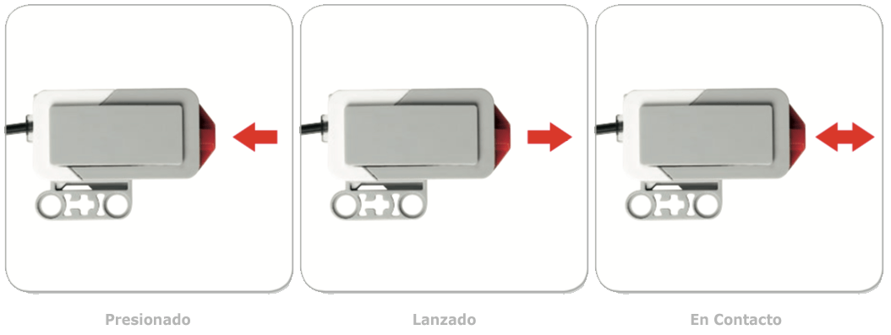
Con la información del sensor táctil, se puede programar un robot para ver el mundo como lo haría una
persona no vidente, es decir, extendiendo un brazo y respondiendo cuando toca algo (presionado).
Puede construir un robot con un sensor táctil presionado contra la superficie. Luego, puede programar el
robot para que responda (se detenga) cuando esté a punto de pasar el borde de la mesa (cuando el sensor se
lanza).
Un robot de pelea puede programarse para continuar empujando hacia adelante en dirección a su oponente hasta
que este se retire. Ese par de acciones, presionado y lanzado, constituyen el estado En contacto.
El sensor ultrasónico es un sensor digital que puede medir la distancia a un objeto que se encuentra frente a él.
Para hacerlo, envía ondas de sonido de alta frecuencia y mide cuánto tarda el sonido en reflejarse de vuelta
al sensor. La frecuencia de sonido es demasiado alta para el oído humano.
La distancia a un objeto puede medirse en pulgadas o centímetros. Esto le permite programar su robot para
que se detenga a una distancia determinada de una pared.
Al utilizar unidades en centímetros, la distancia detectable es entre 3 y 250 centímetros (con una exactitud
de +/- 1 centímetro). Al utilizar unidades en pulgadas, la distancia detectable es entre 1 y 99 pulgadas (con
una exactitud de +/- 0,394 pulgadas). Un valor de 255 centímetros o 100 pulgadas significa que el sensor no
puede detectar ningún objeto frente a él.
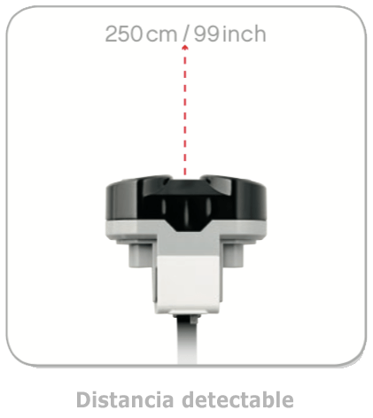
Una luz que permanece encendida alrededor de los ojos del sensor indica que el sensor está en modo medida.
Una luz que parpadea indica que está en modo presencia.
En modo presencia, el sensor puede detectar otro sensor ultrasónico que funciona cerca. Al escuchar en busca
de una presencia, el sensor detecta señales de sonido pero no las envía.
El sensor ultrasónico puede ayudar a sus robots a esquivar muebles, seguir un objetivo móvil, detectar un
intruso en la sala o emitir un sonido "ping" con volumen o frecuencia en aumento a medida que un objeto se
acerca al sensor.
Nota: Debido a que el sensor ultrasónico depende de la reflexión de ondas de sonido, es posible que no resulte eficaz en la detección de superficies texturadas o de objetos redondeados. También es posible que un objeto sea demasiado pequeño para que el Sensor ultrasónico lo detecte.